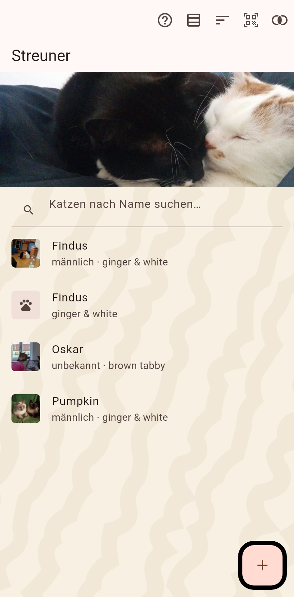

Katzen, die gerade kein Zuhause haben: Fundkatzen, entlaufene Katzen, Katzen von einem Aushang. Verfolgt über die Orte, an denen sie gesehen wurden, statt über eine Adresse.

Eine Liste oder eine Tabelle aller Streuner, mit einem Filter oben und dem eigenen Titelbild der Streuner. Das eine Plus fächert die Wege auf, auf denen ein Streuner hereinkommt: ein neuer Streuner von Hand, ein Foto jetzt, ein Foto aus der Galerie, Bilder aus einem Video, ein Aushang. Der Scanner liest einen cat(a)log-Code von einem Plakat oder vom Bildschirm eines anderen Betreuers.
Jede Sichtung ist eine Position auf der Karte; die neueste ist der Pin der Katze, die früheren ihre Spur. "Hier gesehen" auf der Seite einer Katze trägt die Position des Telefons ein; ein langer Druck auf die Karte trägt eine für eine gewählte Katze ein. Siehe Die Karte.